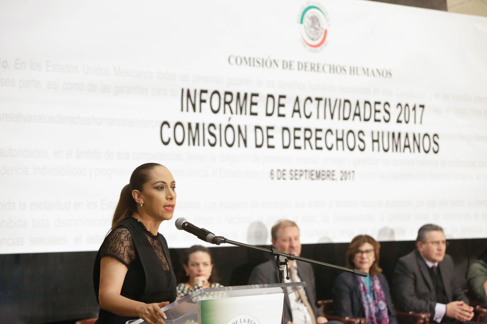

El Salvador es una república constitucional multipartidista. Las elecciones municipales y legislativas celebradas en marzo de 2015 fueron en general libres e imparciales. Sin embargo, los resultados de las elecciones se retrasaron debido a problemas con la transmisión, tabulación y difusión pública del cómputo de votos. En 2014, se celebraron elecciones presidenciales libres e imparciales. Las autoridades civiles no pudieron a veces mantener un buen control sobre las fuerzas de seguridad.  Los principales problemas relacionados con los derechos humanos incluyeron supuestas ejecuciones ilícitas de presuntos mareros y otras personas por parte de las fuerzas de seguridad; desapariciones forzadas por parte de personal militar, al que el gobierno enjuició; torturas por parte de las fuerzas de seguridad; condiciones carcelarias duras y potencialmente mortales; arrestos y detenciones arbitrarios; falta de respeto por parte del gobierno a la imparcialidad e independencia judicial; corrupción generalizada del gobierno; violencia de los mareros contra mujeres y niñas, así como contra personas lesbianas, gais, bisexuales, transgénero e intersexuales; y niños sometidos a las peores formas de trabajo infantil. Persistió la impunidad a pesar de las medidas gubernamentales para despedir y enjuiciar a algunos funcionarios de las fuerzas de seguridad, el poder ejecutivo y el sistema judicial que habían cometido abusos.